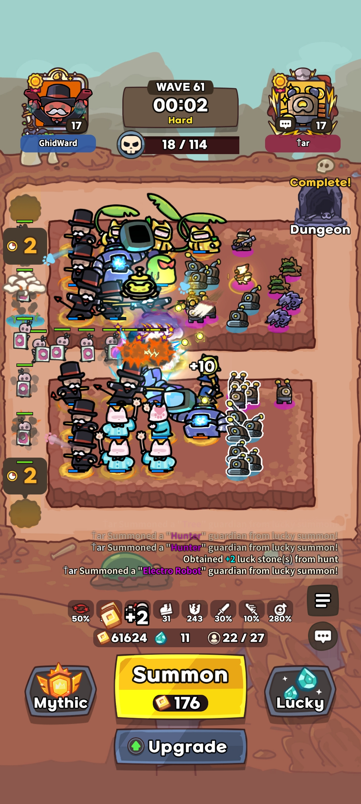

The most overlooked units
Have you ever had a game where you had 10+ mythics on the board all at the same time, but still somehow lost? You get so many strong mythics out there, you feel like you should win easily but you don't? This happens all the time, and it's because people don't know that a couple of the best units in the game aren't mythics at all.
Let me show you some units that are almost required in every run to win.
Using stun to increase damage
Why are these listed as some of the best units? Let's say you have a mythic that can hit an entire group of enemies really hard, but all the enemies are spread out far apart like in this picture.

When batman uses his ult or any of his strongest attacks, he's only going to hit the enemies that are right next to him. So what if we stun all the enemies so that they're all clumped together right next to batman? Take the following clip for example.

Every time batman does his heavy attack, he hits every enemy currently in the game.
For this demonstration, me and the other player both sell our stun units right after this same clip. Watch what happens when we do that.

Instantly they overwhelm us. None of them are taking much damage anymore. They're nearly at full health when they run past and start to surround the entire battlefield. We lost that game as soon as we sold all our stuns.
How much stun do you need?
If you have enough stun, the enemies should be almost completely locked in place right next to your attacking mythics. A very common stun layout is to have 1 full stack of the epic electro bot, and 2 full stacks of the blue shock robot, and have the same layout on both sides. Below is an example of a stun layout that is very close to that.
In this picture, we have 1 full stack of purple stun on both sides, and 2 full stacks of blue stun on both sides. Here we also have it moved more towards the back end so that our monopoly men can get more lucky coins from casting their ults while they head towards the stun we've placed next to our dps mythics. You can put stuns close to the front as well, as long as you're stunning the enemies within range of your dps mythics.
Using these stun placements, the information in the defense reduction guide, at least level 1 sb/mg, and some practice, you can start to carry normal mode easily. With level 3 sb/mg, you can start clearing hard mode regularly.
Good luck!
-
Wait, but how do all stun units in the game really stack up? If you want to see a detailed breakdown that compares all the most common stun options against each other, check below.
Stun Units Comparison
This is a table comparing the stats on all the different stun units in the game. Here we show the units, and their average stun per second.
| Units | # Units | ASpd | Act % | Stun Dur. | Stun / sec |
|---|---|---|---|---|---|
| 3x Shock Robots 12 | 3 | 2.2 | 12% | 1.25s | 0.99 |
| 3x Shock Robots 15 | 3 | 2.4 | 12% | 1.25s | 1.08 |
| 3x Electro Robots 12 | 3 | 2.2 | 10% | 1.20s | 0.79 |
| 3x Electro Robots 15 | 3 | 2.4 | 10% | 1.20s | 0.86 |
| Graviton 6 | 1 | 2.0 | 13% | 3.0s | 0.78 |
| Graviton 9 | 1 | 2.2 | 13% | 3.0s | 0.86 |
| Graviton 12 | 1 | 2.2 | 13% | 4.5s | 1.29 |
| Graviton 15 | 1 | 2.4 | 13% | 4.5s | 1.40 |
| Graviton 12 (w/ exclusive treasure lvl 6) | 1 | 2.2 | 13% | 4.5s | 1.49 |
| Graviton 12 (w/ exclusive treasure lvl 11) | 1 | 2.2 | 13% | 4.5s | 1.78 |
| Graviton 15 (w/ exclusive treasure lvl 6) | 1 | 2.4 | 13% | 4.5s | 1.62 |
| Graviton 15 (w/ exclusive treasure lvl 11) | 1 | 2.4 | 13% | 4.5s | 1.94 |
Stun/sec is the expected stun dished out per second by one full stack (either 3x non-mythic or 1x mythic). This number gives you an idea how effective the stack is at keeping enemies stunned.
Another factor to take note of is the consistency of stuns. If your stuns are inconsistent then enemies might be able to walk through your stun zone before the stun triggers. Stun consistency is dependent on both stun/sec and attack frequency. It is recommended to have at least 6 stun units on both sides (meaning at least 12 combined) to provide enough attack frequency for stun consistency.
Factors which are not included above:
- Attack speed increase: Increases stun/sec but doesn't change the ranking
- Old Book artifact: This artifact increases skill activation chance which slightly favours units with lower skill activation chance.
What about Coldy 6?
Coldy 6 isn’t on the list as her contribution to stunlock comes from more than just her stun per second. She has passive 50 slow and her Ice Flower skill further slows affected enemies by 50 speed. This gives your other stunners more time to re-stun any enemies which break out of their stunlock before they leave the stun zone. Her stun itself is nothing to shout about (0.48 stun/sec) but the other contributing factors make her one of the strongest stun units in the game. However, she's a bit nerfed because her stun range is so massive that she sometimes causes stun where it's not wanted. This means she's best used on attempts at full solo runs where you're trying to do all your own damage AND support, because she'll help you maximize on space, and you can play around it better. She does require a Storm Giant to summon as well, and that could potentially be used for other helpful mythics, so really outside of that one use case she doesn't see much play.